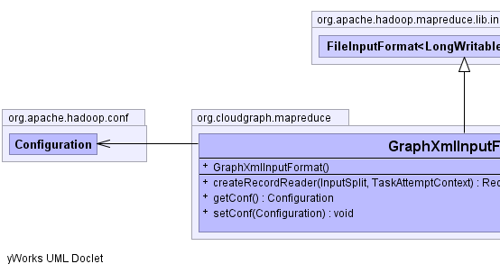
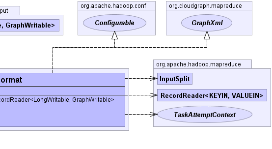

public class GraphXmlInputFormat extends org.apache.hadoop.mapreduce.lib.input.FileInputFormat<org.apache.hadoop.io.LongWritable,GraphWritable> implements org.apache.hadoop.conf.Configurable, GraphXml
FileInputFormatGraphXmlRecordReader,
GraphWritable|  |  |
DEFAULT_LIST_STATUS_NUM_THREADS, INPUT_DIR, INPUT_DIR_RECURSIVE, LIST_STATUS_NUM_THREADS, NUM_INPUT_FILES, PATHFILTER_CLASS, SPLIT_MAXSIZE, SPLIT_MINSIZEROOT_ELEM_NAMESPACE_PREFIX, ROOT_ELEM_NAMESPACE_URI| Constructor and Description |
|---|
GraphXmlInputFormat() |
| Modifier and Type | Method and Description |
|---|---|
org.apache.hadoop.mapreduce.RecordReader<org.apache.hadoop.io.LongWritable,GraphWritable> |
createRecordReader(org.apache.hadoop.mapreduce.InputSplit split,
org.apache.hadoop.mapreduce.TaskAttemptContext context) |
org.apache.hadoop.conf.Configuration |
getConf() |
void |
setConf(org.apache.hadoop.conf.Configuration configuration) |
addInputPath, addInputPathRecursively, addInputPaths, computeSplitSize, getBlockIndex, getFormatMinSplitSize, getInputDirRecursive, getInputPathFilter, getInputPaths, getMaxSplitSize, getMinSplitSize, getSplits, isSplitable, listStatus, makeSplit, makeSplit, setInputDirRecursive, setInputPathFilter, setInputPaths, setInputPaths, setMaxInputSplitSize, setMinInputSplitSizepublic org.apache.hadoop.conf.Configuration getConf()
getConf in interface org.apache.hadoop.conf.Configurablepublic void setConf(org.apache.hadoop.conf.Configuration configuration)
setConf in interface org.apache.hadoop.conf.Configurablepublic org.apache.hadoop.mapreduce.RecordReader<org.apache.hadoop.io.LongWritable,GraphWritable> createRecordReader(org.apache.hadoop.mapreduce.InputSplit split, org.apache.hadoop.mapreduce.TaskAttemptContext context) throws java.io.IOException, java.lang.InterruptedException
createRecordReader in class org.apache.hadoop.mapreduce.InputFormat<org.apache.hadoop.io.LongWritable,GraphWritable>java.io.IOExceptionjava.lang.InterruptedExceptionCloudGraph® is a registered trademark of TerraMeta Software, Inc. Copyright © 2014 - All Rights Reserved.